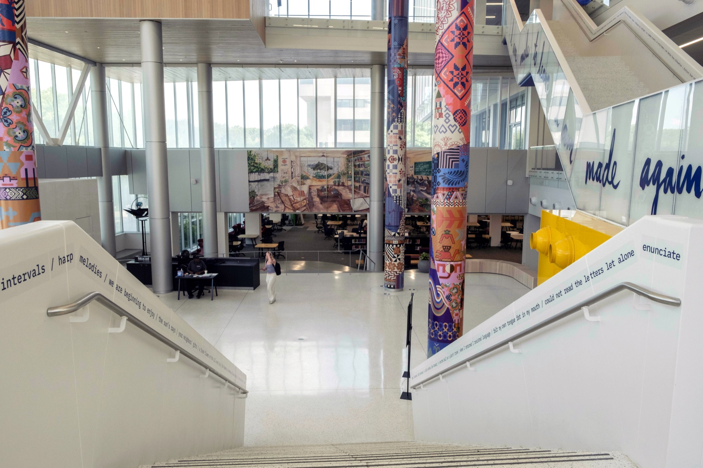
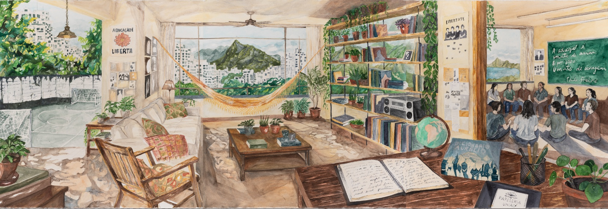
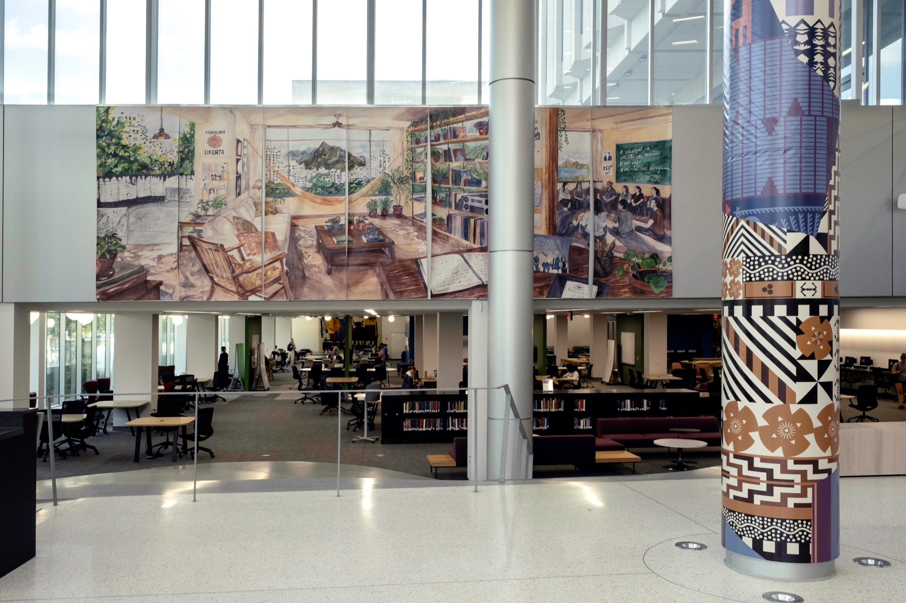

Susy Bielak
HUMAN Fellow · Studio Art
Lake Forest College · susybielak.com
Speculative Nationality Rooms & Pattern Atlas

Project statement by Susy Bielak
My HUMAN Fellowship has supported the development of two interconnected bodies of work, Speculative Nationality Rooms and Pattern Atlas, within the larger project I Am Made to Leave / I Am Made to Return. Both use humanistic and artistic research to consider nationality, migration, cultural inheritance, home, and belonging, while exploring how AI can function as a research and visualization tool within an artist-led process.
Speculative Nationality Rooms grows out of conversations with people whose relationships to home and nationality are multivalent, inviting them to imagine nationality rooms of their own. Interviews, participant photographs, architectural references, archival and visual research, and AI-assisted rendering become the foundation for large-scale watercolor paintings: imagined spaces of belonging shaped by migration, memory, and lived experience.

For Pattern Atlas, I worked with Lake Forest College student researchers Ari Kazantceva and Alexa Moreno to investigate patterns and ornamental traditions across cultures and geographies. AI-assisted research tools allowed us to search and make connections across extensive online museum, ethnographic, cultural and personal collections at a scale that would otherwise have been difficult. The research process continually returned to questions of cultural specificity, interpretation, and how to preserve difference and complexity. The completed work draws from more than 200 pattern sources and uses beauty, ornamentation, and pattern to trace histories of cultural transmission and connection across time and geography.
Student Researcher
“What was most meaningful to me about working on Pattern Atlas was the dedication we put into creating an authentic and genuine representation of the cultures and objects we researched. Whether we were looking at patterns from Germany, El Salvador, India, or elsewhere, I was constantly surprised by the connections and similar motifs that emerged across cultures. Seeing those repetitions made me realize how, despite our unique histories and differences, there are ways in which we are deeply connected simply because we are human. It is incredibly meaningful to see that idea come to life in the finished installation.”
Alexa Moreno, Lake Forest College student researcher, Pattern Atlas
These two HUMAN-supported strands are now part of the completed installation I Am Made to Leave / I Am Made to Return at the University of Pittsburgh’s Hillman Library, a collaborative project by Fred Schmalz and me, with Aaron Henderson, on view July 2026–July 2027. Drawing on Pitt’s Nationality Rooms and the University Library System Archives and Special Collections, four interconnected artworks unfold across the library and consider how cultural memory is preserved, interpreted, carried forward, and continually remade.

The Speculative Nationality Rooms research will continue and expand at Lake Forest College this winter in my solo exhibition, Inner Weather, on view January 21–February 21, 2027. The exhibition will include new paintings from the series alongside video from I Am Made to Leave / I Am Made to Return and other recent work investigating home, belonging, and movement.